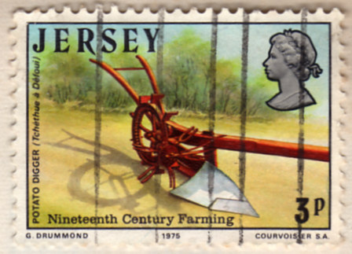

Lé labouothage à la tchéthue sé fait dépis pus d'quat' chents ans, en Jèrri. Mais la grand' tchéthue fut faite sèrvi pouor les preunmié fais contre la fîn du dgiex-huitième siècl'ye, ou p't-être tchique temps d'vant ch'la. Et ch'tait sustout pouor la récolte des pânnais. Car nou sait qué au c'menchement du drein siècl'ye (lé dgiex-neuvième) chutte récolte otchupait un dgiexième dé la tèrre labouothabl'ye. Nou souongnait l'bestchias et les quétots atout, et nou dîthait qué "nou-s-engraissait des couochons dans siex s'maines, des boeufs dans trais mais", sus des pânnais. Et pis étout, lé beurre dé la miyeu qualité s'faîthait d'la crème donnée par des vaques tch'avaient en partie des pânnais comme nouôrrituthe. Mais la pânnais est crue dans l's Îles dé la Manche y'a pus d'siex chents ans. Nou-s-en craît à ch't heu rein qu' dans les gardîns. Enfîn, èrvénons à nouos moutons. La grand' tchéthue, don, aut'fais, était quâsi toute en bouais, mais solidement bâtie - lé bouais ou l'corps, lé choutchet, les manchots, la haie, lé montant, et cétéra. N'y'avait qu'à bein près les fièrs tchi n'y'étaient pon. Ah, danme, les cheinnes d'à ch't' heu n'èrsembl'yent dgéthe fort à ches preunmié grand's tchéthues-là! Ni même, tant qu'à ch'la, à ch' qué nou faîthait sèrvi jusqu'à d'vant la dreine dgèrre.
Nou liait siex j'vaux sus la grand' tchéthue, eune liée doubl'ye, mais y'en avait étout d'pus grandes sus tchi nou liait six ou huit j'vaux ou méme tchiquefais dgix ou douze. Ch'est qué ch'tait l'habitude dé faithe sèrvi touos les j'vaux d'un vaîthinné pouor touônner la tèrre et la main-d'oeuvre tchi n'mantchait janmais. Pathelle grand' tchéthue, étant assez couôteûthe à faithe et n'faîthant sèrvi qu' pouor la saison du labou, souvent apparténait à deux'trais vaîthîns ensembl'ye. Car, ch'est qu' nouos vièrs savaient bein couoyer. Lé t'neux, dans les manchots, 'tait d'amors lé chein pouor tchi qu' nou touônnait chu jour-là. Nou fonçait bein pus atout ches grand's tchéthues qué nou n'fait d'nouos jours, pouor des pânnais sustout, et nou prannait d'la raie comme nou n'connalt pon à ch't heu dépis bein longtemps. Et pis, l'cacheux. Ne pouv'-ous don pon l'èrvaie, lé cacheux et sa belle liée, fyi comme un rouai ? Et ne les viy'-ous pon, les j'vaux, les tchuivres r'lîthants, d'un but ou d'l'autre du clios, trottinnant sus la fouoyéthe l'avant à l'êsselet au dêpitchage dé la tchéthue, et d'vant r'prendre lé pitchage dé la raie d'l'autre bord, sait-che à faîter ou à déj'ter? Et pis, sans doute, i' fallait quatre bouons hommes - iun à châque pitchage et deux autres ès dêpitchages. Et tout un troupé d'gens à rabilyi sus la rande à l'entou du clios, ch'est à dithe à r'dréchi la tèrre atout eune bêque à m'suthe qu'oulle 'tait touônnée.

Mais à part dé ch'la y'avait la tchéthue à brisi (ou tchéthue à grain, comme nou dîthait étout, car ch'tait chette-là qu' nou faithait sèrvi pouor les tchéthuethies pouor les grains) auve eune liée d'quat' chévaux tch'allait l'avant à la grand' tchéthue. Ch'la va sans dithe qué l'béthe et l'mangi, sustout l'béthe (lé fanmeux cidre Jèrriais), né mantchaient pon au clios, et l'sé dé pathelle journée d'grand' tchéthue sé pâssait en rêjouissance et rêvillon atout d'la dans'sie et des chansons, souvent jusqu'à eune heuthe bein avanchie dans la niet, pouor èrquémenchi l'lendemain au matîn à sept heuthes (si ch'tait au mais d'févri) siez un autre vaîthîn. I' faut craithe qué nouos vièrs 'taient pus dueurs qué nou n'est au jour d'aniet! Véthe, la touônn'nie d'tèrre en Jèrri aut'fais 'tait eune occâsion speciale quand touos les fèrmièrs d'un vaîthinné (ou des pathents) s'entr'aîdgaient. Dans la matinnée la bouochie 'tait apportée au clios, tch'était d'amors des beurrées et du fronmage, d'la mouothue rôtie (ou tchiquefais fricachie) et d'la gâche dé pâte à corînthe, et ofûche du fort café: mais janmais l'cidre né mantchait dans les jougues. La même chose à mié-arlévée, quant à la bouochie, ou souvent rein qué d'la gâche car les arlévées 'taient pus courtes. À méjeu nou dêliait pouor dinner et, tandi qu' les j'vaux mangeaient, tout l'monde tapaient dans l'èrpas - ofûche d'la soupe dé caboche et un jambon d'lard bouoilli, et cétéra. Lé grand r'pas du sé s'faîthait sus eune rouelle dé boeu (nou d'bitait la rouelle atout lé "grand couté a viande", d'eune londgeu d'vîngt-chinq pouces, l'aleunmelle étant d'dgiex-huit pouces atout un manche dé sept pouces. J'pense qué l'seul tchi reste dans l'Île au jour d'aniet, un couté d'eune chentaine d'années, est l'chein qué j'présentis et qu'j'avons au Musée d'Agritchultuthe à La Hougue Bie), et dèrché du lard, et du podîn d'flieu, podîn d'fruit, podîn d'riz ou autres podins, ou du pâté d'pommes ou pâté à solyi. Et - du cidre à gogo. Ch'tait la couôteunme d'înviter au festin étout les gens des difféthentes fanmil'yes tchi n'avaient pon prins part dans les travaux d'la journée, et d's anmins et des pathents d'hors pâraisse, ofûche, ou d'la ville. Souvent les pus riches fèrmièrs env'yaient tchiquechose (du podîn, par exempl'ye) à tchiques malades ou ès pouôrres gens du vaithinné tchi n'avaient pon aîdgi.
À des bords, lé temps pâssé, y'avait un homme à j'va tchi faithait l'tou du clios tout l'temps atout eune joudgie, à la rencontre d'la liée, et châtchun tch'avait sé engambait tout d'suite pouor en avaler eune gorgie. Ailleurs, étout, nou chouaîthissait les pus belles des jannes fil'yes pouor sèrvi la bouaisson.

Lé sé d'un jour dé grand' tchéthue ch'tait l'fèrmyi siez tchi qu' nou-s-avait touônné tchi fournissait l'grand r'pas, comme dé raison, et l'restant d'la séthée (comme a 'té dêjà dit) et tchiquefais eune partie d'la niet étout s'pâssait au son d'la musique - un vyi, eune vielle (ou chifouornie) ou un violon à danser et chanter - les vielles danses telles qué "Ha!... man bieau lau-ri-er", "Doubl'ye, doubl'ye la violette", "Auprès siex heuthes", la danse du cotillon, et cétéra, et les vielles chansons, "Jean, gros Jean...", "Man bouonhomme est bein malade...", "A la claire fontaine", "Belle rose au rôsyi blianc", "Bitchon - Bitchette" (pûtôt èrcitée, chette-chîn), "Malbrouck", "Ver-du-ron, ver-du-ron-et-o, ver-du-ron, don-don", "J'ai pèrdu ma femme...", "En pâssant par siez nous..." et bein d'autres. Et pis des jeux d'cartes, sans doute, Lé ji favori d'nouos anciens était "lou", un autre "les trais-sept" et y'avait étout "âlfaure", "la dgèrre des rouais", "l'âne" et "la vielle fil'ye". Et d'autres jeux pouor les jannes, comme "cafot" et "cafot chinnouais", ès dominnos, au "futhet du bouais joli", et cétéra.
Nou peut don s'fidguther lé fliotchet d'gens au clios dans ches bouons vièrs temps, tous en travas d'bouonne heunmeu. Tchille annînmâtion! Et, qué nou voudrait bein r'vaie d'ité! Et les tabl'yes chèrgies pouor lé grand r'pas, et tout l'rêvillon pus tard. Où'est tch'est toute chutte "manniéthe dé vivre"-là horte?
Lé temps pâssé étout y'avait les fouôthies (ou fouithies). Ch'tait eune rêunion d'vaîthîns pouor foui un clios à la bêque - la bêque Jèrriaise - tchi s'faîthait siez l's uns et l's autres tchi n'possédaient pon j'vaux ou tchéthue. Et j'ai connu d's anciens tch'avaient acouo prîns part dans pathelle tâche aussi tard qué 1880-1890, et ch'la pouor eune récolte d'pânnais. Faut d'mander, don, si ch'est qu' la fouithie d'un clios d'ofûche quatre ou chînq vrégies d'vait prendre du temps. À quatre pèrques par homme par jour, dîthons, i' fallait bein seux c'menchi à, chutte tâche pénibl'ye dès les preunmièrs jours dé janvyi pouor arriver. Quand i' faîthaient deux caûques, ch'est à dithe deux avanteurs dé bêques, la deuxième en r'fouissant dans l'fond d'la raie, ch'la prannait bein seux bein pus longtemps.
Y'avait acouo eune aut' couôteunme, et ch'la s'faîthait jusqu'à p't-être la deuxième maîntchi du drein siècl'ye. V'là tchi s'dîthait foui à la tchéthue. Eune douzaine d'hommes, parfais pus, siêthaient la tchéthue (tchéthue à brîsi ou tchéthue à grain) dans châque raie pouor y foui eune avanteu d'pus, comme eune deuxième caûque, et ch'la sustout si ch'tait pouor eune récolte d'pânnais, Ah ça, i' faut l'dithe acouothe eune fais qué ché n'tait pon tout l'monde tch'avaient l'mouoyen d'aver eune grand' tchéthue ou même tchi pouvaient prendre part à eune bordée d'grand' tchéthue. Ch'est en tchi chutte vielle couôteunme dé foui à la tchéthue, tch'était bein pus vielle qué la touônn'nie à la grand' tchéthue, continnuit comm-é j'dis, criabl'ye jusqu'à la deuxième maîntchi du drein siècl'ye.
Né v'là, don, comme tchi qué nouos vielles gens s'prannaient à labouother lus tèrres - à foui les clios à la bêque, foui à la tchéthue ou touônner à la grand' tchéthue.
I' faut qué j'diche deux mots étout entouor les boeufs. Nou distîndgait aut'fais entre l'boeu et l'touauthé, l'un pouor l'att'lage et l'autre en sèrvice. Nou dîthait un boeu ou un boeu à lier. Au dgiex-huitième siècl'ye, et ofûche jusqu'au c'menchement du dgiex-neuvième, nou liait l'boeu dans les limons du hèrnais et deux j'vaux l'avant, pouor des fortes chèrges êvidemment ou en amont. Et pis l'tout temps pâssé étout, dévant les grand's tchéthues, nou liait boeufs et j'vaux sus la tchéthue au clios, les boeufs au câgnon sus l'batchu et les j'vaux l'avant. Si ch'tait eune liée simpl'ye lé boeu avait un joutchet, mais quand il' 'taient liés doubl'ye nou-s-appelait ch'la l'fardé. J'pense qué chutte couôteunme sé pèrdit en Jèrri au dgiex-huitième siècl'ye, tandi qu'en Dgèrnésy v'là, tch'a duthé bein pus longtemps. Ilà, i' pathaît, cèrtain fèrmyi liait un coupl'ye d'boeufs acouothe à ches drein.
Viyiz étout: